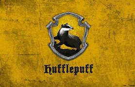

Helga nasceu no mesmo período que seus companheiros, e em Hogwarts, fundou a casa da Lufa Lufa, prezando pela lealdade, paciência e dedicação. Foi uma grande amiga de Rowena Ravenclaw. Ela foi a responsável por dar abrigo a centenas de Elfos Domésticos, em troca dos seus serviços na cozinha da escola, sendo uma bruxa com um grande dom culinário. Helga tinha uma pequena taça, que depois da sua morte, foi passada ao longo das gerações da sua família, indo parar nas mãos de Hepzibah Smith. Hepzibah manteve essa relíquia guardada por anos, a mostrando para um jovem bruxo, chamado Tom Riddle, que a matou, transformando a sua taça em uma horcrux. Riddle enfeitiçou a elfa doméstica de Smith, para que assumisse a culpa pelo assassinato.
